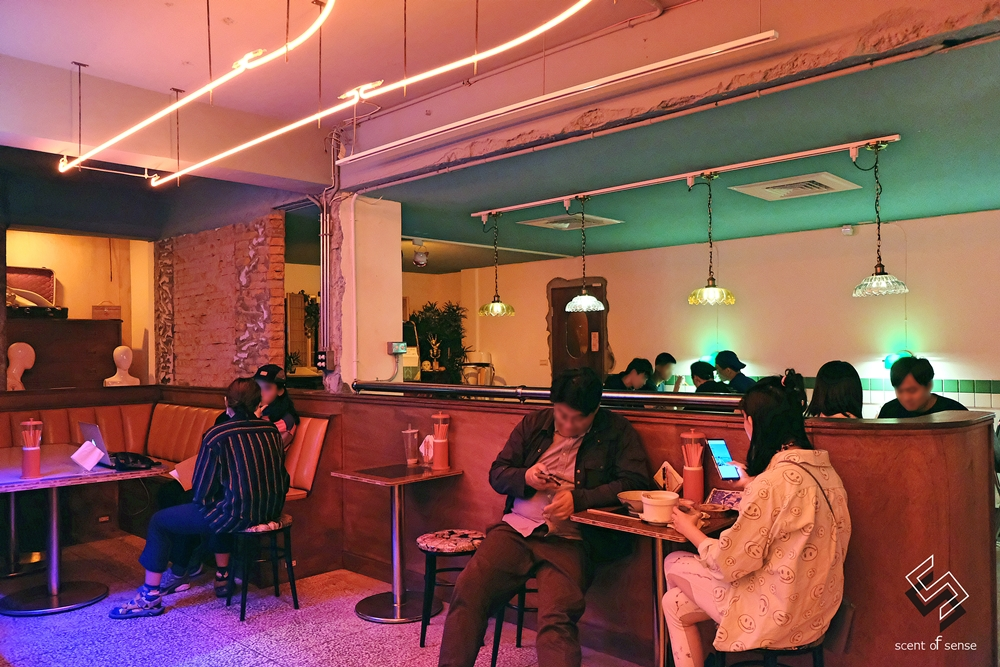
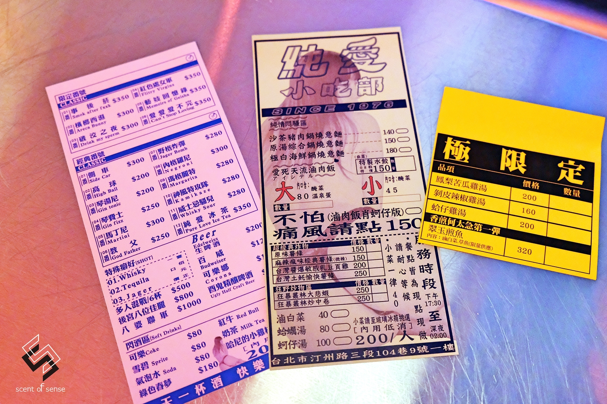

純愛小吃部
80年代台北風

「純愛小吃部 Pure Love Diner Bar 」距離捷運公館站1號出口只有4分鐘路程。 純愛小吃部在靜謐的巷弄中悄悄散發著一股妖魅，可說是時空錯置，亦彷彿將人們拉回了80、90年代，那充滿胭脂酒氣的聲色場所， 讓年輕人用一種幽默方式想像那些叔叔伯伯、阿姨奶奶的生活歷程。像是隱身在街邊的『小吃部』，低調中暗藏春色，純愛二字的霓虹燈招牌將小吃部襯得耀眼。

純愛小吃部的入口處在側邊，門口寫著嚴禁喧嘩以及大大貼紙寫著純吃飯交友，走進小吃部，鮮艷的桃紅光線比想像中柔和， 似乎所有俗氣的東西在這裡都變得旖旎，負負得正，構成一幅綺麗的景致。再往深處探索，這裡的光線和氛圍又有點不同， 卡式沙發座通常都是小吃部春色滿盈之處，不過因為這裡很純，什麼都看不到。對比揮金如土的酒店派頭， 小吃部這類的情色文化就是平民價格，超值享受，可說是俗擱大碗，不只歐吉桑，年輕人也逐漸好此道，問問身邊朋友，若他們說實話，你會感到驚訝的。

這幾張就是純愛小吃部完整菜單，左邊是酒單，最上頭是其他地方喝不到的限定特調，接下來才是經典調酒、shot、啤酒、非酒精飲品， 夜市用好像是他們的特色酒款，來自酉鬼啤酒。中間和右邊那張是餐點，麵食、飯店、炸物、炒物、湯品皆有，價格也算合理。